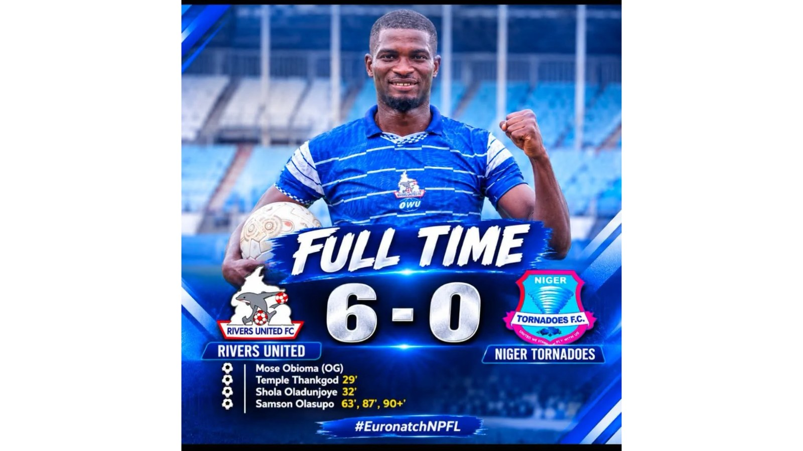

TotalEnergies deepens support for vulnerable Nigerians

TotalEnergies has donated N5 million each to two organisations caring for vulnerable people in Nigeria. The donations were announced at the company’s 2026 Charity Golf Tournament in Port Harcourt, where Country Chair Matthieu Bouyer said the event was intended to raise funds for the charities and support their work in local communities.
The beneficiaries are the Little Sisters of the Poor Home for the Elderly in Enugu and the Rosaline Home Rehabilitation Centre in Ogale, Eleme, Rivers State. The elderly home provides accommodation, meals, medical attention and daily assistance. Bouyer said it had cared for older people in difficult circumstances for more than five decades, regardless of their background or religion.
The rehabilitation centre, operated by the Daughters of Charity of St. Vincent de Paul, supports women with mental health conditions who have experienced homelessness or abandonment. Bouyer said TotalEnergies would add to the tournament proceeds, and encouraged participants and supporters to contribute towards the organisations’ priorities.
Mary Jacinta, the elderly home’s mother superior, welcomed the donation and appealed for further assistance. Established in 1975, the home cares for more than 46 residents, many of whom have physical disabilities or age-related illnesses and need ongoing help with personal needs. Jacinta said the sisters live alongside residents and provide care around the clock, while the home relies on public charity.
She said the donation would help address urgent needs, including renovations to residents’ rooms and adjustable medical beds. The home also faces unreliable electricity and insufficient water supplies, and hopes to install solar power and build a borehole. Jacinta called on individuals and organisations to help improve residents’ welfare and comfort.
Source: Premium Times